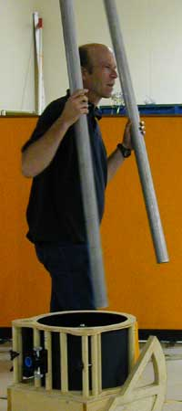
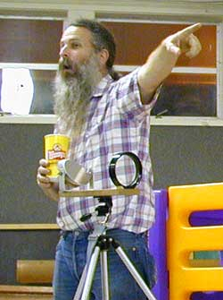
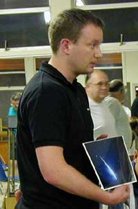
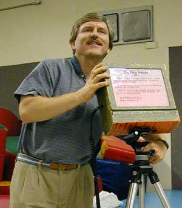
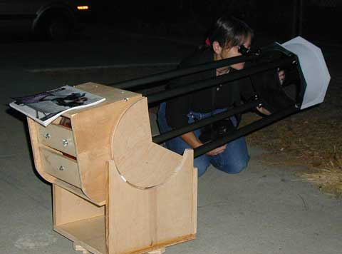

|  |  |
|  |  |
|
Clockwise from lower left: (1) Arne Danielsen of Oslo, Norway,
visiting San Jose on business, brought his great meteor photo. (2) Dave
North introduced his unique dobsonian using two-tube support for the
upper cage. (3) Dwight Elvey stands near the business end of a unique
heliostat built from surplus components. The solar image is projected
into a shaded box some 100 feet distant. (4) Gary Mitchell demonstrates
his homemade guest-friendly information box for public star parties. The
text is backlit with groups of red LEDs. Photos by Akkana Peck.
| |

Akkana Peck has first light for her 8" f/6 dobsonian at "Slide and Equipment Night," September SJAA general meeting.